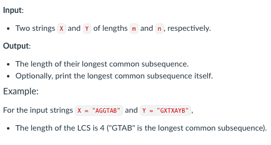

Project Overview
This project involved developing a program that computes the Longest Common Subsequence (LCS) between two input strings using dynamic programming. The program takes two sequences as input and calculates the length of the LCS, optionally displaying the subsequence itself. The solution demonstrates how to efficiently solve a classical algorithmic problem by breaking it down into smaller subproblems and storing intermediate results in a table.
Project Screenshot
Technical Details
Programming Language: Python
Key Concepts: Dynamic Programming, String Algorithms, Table Memoization
Time Complexity: O(m × n) where m and n are string lengths
Skills Developed
- Dynamic programming techniques for solving algorithmic problems
- Breaking complex problems into smaller subproblems
- Implementing table-based solutions for efficient computation
- Handling string manipulation and comparison
- Debugging and validating algorithm correctness with test cases
- Analyzing time and space complexity of algorithms